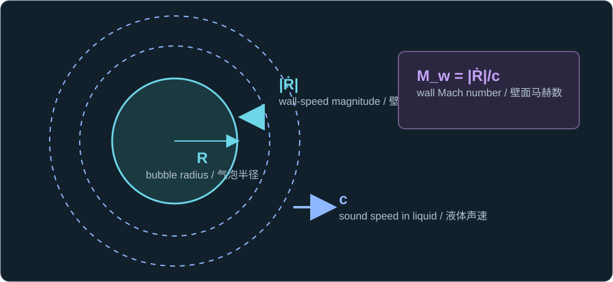
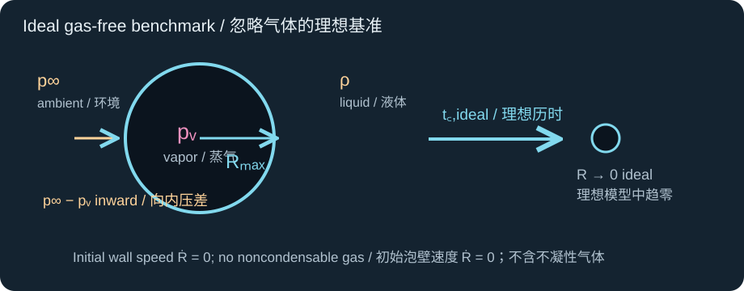
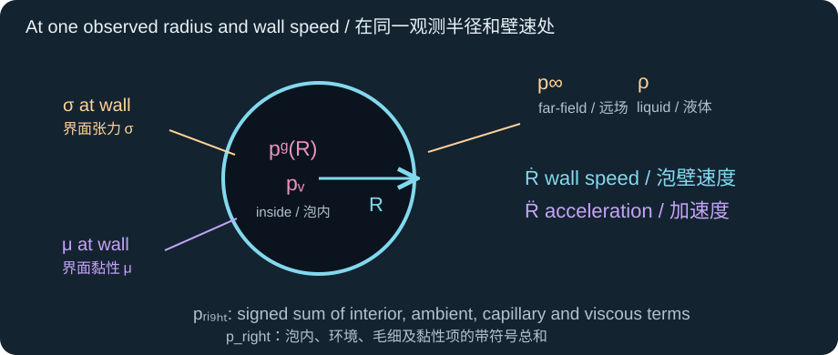
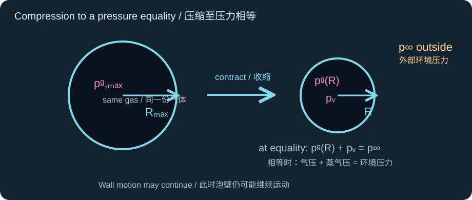

Historical lesson/review. Use the complete textbook course for the current study order. Former Chapters 4 and 5 are now Appendixes A and B.
历史课程／复习材料。当前学习顺序请使用完整教材课程。原第四、五章现为附录 A、B。
Lesson 7 gave a benchmark for a spherical cavity collapsing from rest under a constant inward pressure difference. Real bubbles require an interior-pressure law and can lose the assumptions behind that benchmark. Work through the four concepts below, then use the reference answer placed directly after each question to check your reasoning.
第七课给出了球形空腔从静止开始、在恒定向内压差下塌缩的基准结果。真实气泡需要泡内压力规律，也可能不再满足该基准模型的假设。请先学习以下四个概念，再用每道题后紧接的参考答案核对推理。
The ideal time is a scale, not a promise
理想时间是尺度，不是保证值
Retain the Rayleigh result as a comparison. Here the constant inward gap is the ambient pressure minus the approximately constant vapor pressure. The numerical coefficient assumes an initially stationary, spherical cavity in an infinite, incompressible liquid, with gas, surface tension, and viscosity omitted.
保留 Rayleigh 结果作为比较基准。这里恒定的向内压差是环境压力减去近似恒定的蒸气压。数值系数假设空腔最初静止且保持球形，处于无限延伸的不可压缩液体中，并忽略气体、表面张力与黏性。
tc,ideal ≈ 0.915 Rmax√[ρ/(p∞ − pv)]

The maximum radius, liquid inertia, and inward pressure gap set this benchmark time.
最大半径、液体惯性与向内压差共同决定这一基准时间。
For a fixed amount of noncondensable gas, compression raises its partial pressure as radius falls. The exponent κ specifies the assumed gas process; κ = 1 is the isothermal teaching case. Rising gas pressure can decelerate collapse and eventually contribute to rebound. Even when gas plus vapor pressure equals ambient pressure, the bubble need not be at its minimum radius: the liquid already has inward momentum, and other stresses may still act.
对于固定量的不凝性气体，半径减小时其分压会升高。指数 κ 指定假定的气体过程；κ = 1 是本章采用的等温教学情形。升高的气压可以使塌缩减速，并最终促成回弹。即使气体加蒸气压力等于环境压力，气泡也未必达到最小半径：液体仍携带向内的动量，其他应力也可能仍在作用。
pg(R) = pg,max(Rmax/R)3κ

The same gas occupies a smaller bubble volume during collapse; this closure assigns its pressure.
塌缩时同一份气体占据更小的泡内容积；这一闭合关系给出其压力。
Sources: supplied book, Chapters 4–5; Brennen, Chapter 2.
Three terms change the collapse drive
三个项改变塌缩驱动力
In the spherical, incompressible model, gas and vapor pressures push outward; ambient pressure and surface tension push inward. The viscous term opposes wall motion: when the signed wall velocity Ṙ is negative during collapse, the term written below becomes positive. Check each contribution before making a statement about acceleration.
在球形不可压缩模型中，气体分压与蒸气压向外作用；环境压力与表面张力向内作用。黏性项抵抗壁面运动：塌缩时带符号的壁面速度 Ṙ 为负，因此下式中的黏性项变为正值。判断加速度之前，应逐项核对各项贡献。
ρ[R R̈ + (3/2)Ṙ²] = pg(R) + pv − p∞ − 2σ/R − 4μṘ/R

Pressure, capillary, and viscous terms appear on the right; wall acceleration and flow inertia appear on the left.
压力、毛细和黏性项位于右侧；壁面加速度与流动惯性位于左侧。
A common trap is to identify the sign of the right-hand pressure sum with the sign of R̈. At nonzero speed, the positive radial-flow inertia term also contributes. Solve the complete equation for R̈. Even outward acceleration can coexist briefly with inward velocity: the wall must first slow to zero before it rebounds.
常见误区是把方程右侧压差总和的符号直接等同于 R̈ 的符号。壁速不为零时，正的径向流动惯性项也参与平衡。应从完整方程解出 R̈。即使加速度已指向外部，壁面仍可能暂时向内运动：它必须先减速到零，才能回弹。
Sources: supplied book, Chapters 3 and 5; Brennen, Chapter 2.
Fast collapse can outrun a model assumption
快速塌缩可能超出模型假设
The wall Mach number compares wall-speed magnitude with sound speed in the liquid. When it is no longer very small, finite sound propagation and acoustic radiation become relevant to the desired observable. This is a diagnostic, not a universal numerical switch. A compressible radial model can represent sound effects while remaining spherical; it still cannot resolve a jet.
壁面马赫数将壁速大小与液体声速相比较。当它不再远小于一时，有限声传播速度和声辐射可能影响目标可观测量。这是诊断量，而非普适的数值开关。可压缩径向模型可以表示声学效应，同时仍假设球对称；它依然无法解析射流。
Mw = |Ṙ|/c

Wall motion and sound propagation provide two different speed scales.
壁面运动与声传播给出两个不同的速度尺度。
Sources: supplied book, Chapter 7; Brennen, Chapter 3.
A radius history cannot predict a jet
半径历程无法预测射流
For a bubble near an initially flat boundary, the stand-off ratio compares the bubble-center distance to that boundary with the maximum radius. It records important geometry but does not specify the boundary's mechanical response. An ideal rigid wall often favors a re-entrant collapse jet toward the wall; a free or compliant boundary can behave differently. The radial equation has no interface-shape variable, so it cannot determine jet direction, speed, or impact load.
对于靠近初始平直边界的气泡，离壁比比较泡心到该边界的距离与最大半径。它记录了重要几何信息，却没有指定边界的力学响应。理想刚壁通常使回入塌缩射流趋向壁面；自由或柔性边界可能表现不同。径向方程没有界面形状变量，因此不能确定射流方向、速度或冲击载荷。
γs = h/Rmax

The geometry is measurable; jetting requires shape-resolving observations or a shape-resolving model.
几何量可以测量；研究射流还需要可解析界面形状的观测或模型。
A re-entrant jet through a collapsing bubble and an ejected jet leaving a liquid surface are different objects. We will study both in depth in a later chapter before applying either mechanism to the project's film-transfer claims.
穿入塌缩气泡的回入射流，与离开液面的喷出射流，是两种不同对象。在将任何一种机制用于本项目薄膜转移命题之前，后续章节将深入研究两者。
Sources: supplied book, Chapters 8–9; Brennen, Chapter 3.
Diagnose a collapsing bubble near a boundary
诊断靠近边界的塌缩气泡
A bubble in water reaches the maximum radius listed below and then collapses. Treat the gas as a fixed amount following the isothermal law. There are two distinct observations: snapshot A, at 50 µm with signed wall speed −20 m/s, is used only in parts 2–3; observation B, later at wall-speed magnitude 300 m/s, is used only for the Mach number in part 5. Use these values as a teaching scenario, not as measurements from this project. All pressures are absolute.
水中的一个气泡达到下列最大半径后开始塌缩。将泡内气体视为固定量，并采用等温规律。这里有两次不同的观测：观测 A 的半径为 50 µm、带符号壁速为 −20 m/s，只用于第 2–3 小题；较晚的观测 B 给出壁速大小 300 m/s，只用于第 5 小题的马赫数。这些数值只是教学情景，并非本项目的实测值。所有压力均为绝对压力。
| Quantity物理量 | Given value给定值 |
|---|---|
| Bubble geometry气泡几何 | Rmax = 100 µm; h = 150 µm |
| Liquid properties液体性质 | ρ = 1000 kg/m³; μ = 1.0 × 10−3 Pa·s; σ = 0.072 N/m; c = 1500 m/s |
| Pressures at maximum radius最大半径时的压力 | p∞ = 101 kPa; pv = 2.0 kPa; pg,max = 1.0 kPa; κ = 1 |
| Snapshot A → parts 2–3观测 A → 第 2–3 小题 | R = 50 µm; Ṙ = −20 m/s |
| Later observation B → part 5 Mach only较晚观测 B → 仅用于第 5 小题马赫数 | |Ṙ| = 300 m/s |
Use SI units internally. Show the sign of every pressure contribution and give units for each numerical result. Each part has a collapsible reference answer immediately below it:
内部计算统一使用 SI 单位。写出每个压力项的符号，并为所有数值结果注明单位。每小题正下方都有可展开的参考答案：
Calculate the ideal gas-free Rayleigh collapse time. State why it is only a benchmark for this gas-containing bubble.
计算忽略气体时的理想 Rayleigh 塌缩时间，并说明为何它对这个含气气泡只是基准值。
Reference answer / 参考答案
tc,ideal ≈ 0.915 Rmax√[ρ/(p∞ − pv)]

The ideal pressure gap and liquid inertia set this benchmark.
理想压差与液体惯性决定这一基准值。
First calculate the gap: 101 kPa − 2 kPa = 99 kPa. Substitution of Rmax = 100 µm and ρ = 1000 kg/m³ gives tc,ideal = 9.196 µs. This is a gas-free constant-gap benchmark. The stated bubble contains 1 kPa of noncondensable gas at maximum radius, which compresses during contraction, so this number is not its predicted actual collapse time.
先求压差：101 kPa − 2 kPa = 99 kPa。代入 Rmax = 100 µm 和 ρ = 1000 kg/m³，得到 tc,ideal = 9.196 µs。这是忽略气体、压差恒定时的基准值。题目中的气泡在最大半径处仍含 1 kPa 不凝性气体，且该气体会在收缩时受压，因此此值并非对实际塌缩时间的预测。
At snapshot A (50 µm, −20 m/s), calculate gas pressure, capillary pressure magnitude, and the signed viscous contribution on the right side of the radial equation. Then calculate the complete right-side pressure sum.
在观测 A（50 µm，−20 m/s）中，计算气体分压、毛细压力大小，以及径向方程右侧带符号的黏性贡献，再求右侧完整的压力项总和。
Reference answer / 参考答案
ρ[R R̈ + (3/2)Ṙ²] = pg(R) + pv − p∞ − 2σ/R − 4μṘ/R

Signs are the contributions as written on the right side.
符号对应方程右侧各项的实际正负贡献。
pg(R) = pg,max(Rmax/R)³ (κ = 1)
Halving the radius makes the isothermal fixed-gas pressure eight times larger.
半径减半使固定量气体的等温分压增至八倍。
pcapillary = 2σ/R
pviscous,RHS = −4μṘ/R
pright = pg(R) + pv − p∞ − pcapillary + pviscous,RHSCapillary is a positive magnitude subtracted from the right side; the viscous term already includes its sign.
毛细压力是正的大小，在右侧被减去；黏性项则已包含其自身符号。
At snapshot A, gas pressure is (1.0 kPa)(100/50)³ = 8.00 kPa. Capillary pressure has magnitude 2(0.072 N/m)/(50 µm) = 2.88 kPa and enters with a minus sign. The viscous term is −4(0.001 Pa·s)(−20 m/s)/(50 µm) = +1.60 kPa; it opposes inward motion. Thus the signed contributions are +8.00 +2.00 −101.00 −2.88 +1.60 = −92.28 kPa.
观测 A 中的气压为 (1.0 kPa)(100/50)³ = 8.00 kPa。毛细压力大小为 2(0.072 N/m)/(50 µm) = 2.88 kPa，在方程右侧取负号。黏性项为 −4(0.001 Pa·s)(−20 m/s)/(50 µm) = +1.60 kPa，抵抗向内运动。因此带符号的各项相加为 +8.00 +2.00 −101.00 −2.88 +1.60 = −92.28 kPa。
Use the full radial equation and snapshot A's inward speed to calculate instantaneous wall acceleration. State whether the wall is speeding up inward or slowing down.
用完整径向方程和观测 A 的向内壁速计算瞬时壁面加速度，并判断壁面向内运动是在加快还是减慢。
Reference answer / 参考答案
ρ[R R̈ + (3/2)Ṙ²] = pg(R) + pv − p∞ − 2σ/R − 4μṘ/R
The positive squared-speed term must remain when solving for acceleration.
求加速度时，必须保留正的壁速平方项。
R̈ = [(pright/ρ) − (3/2)Ṙ²]/R
Here pright is the complete signed sum from part 2.
其中 pright 是第 2 小题求得的完整带符号总和。
Insert pright = −92,280 Pa, ρ = 1000 kg/m³, Ṙ = −20 m/s, and R = 50 µm. The numerator is −92.28 − 600 = −692.28 m²/s², so R̈ = −1.38456 × 10⁷ m/s² ≈ −13.85 Mm/s². Both Ṙ and R̈ are negative: the wall is moving inward and speeding up inward at this instant. The sign of pright alone would not have been enough to determine R̈ at nonzero speed.
代入 pright = −92,280 Pa、ρ = 1000 kg/m³、Ṙ = −20 m/s 和 R = 50 µm。分子为 −92.28 − 600 = −692.28 m²/s²，因此 R̈ = −1.38456 × 10⁷ m/s² ≈ −13.85 Mm/s²。Ṙ 与 R̈ 均为负：此刻泡壁向内运动，并且向内运动正在加快。速度不为零时，不能仅凭 pright 的符号判断 R̈。
Ignoring capillarity and viscosity for this comparison only, find the radius where gas plus vapor pressure first equals ambient pressure during contraction. Explain why this equality alone does not locate rebound.
仅在这一比较中忽略毛细与黏性项，求收缩过程中气体加蒸气压力首次等于环境压力时的半径，并解释为何这一等式本身不能确定回弹半径。
Reference answer / 参考答案
pg(R) + pv = p∞

This equality deliberately omits capillarity and viscosity for the comparison.
这一比较有意暂时忽略毛细与黏性项。
pg(R) = pg,max(Rmax/R)³ (κ = 1)
The fixed gas amount links pressure to the contracting radius.
固定的气体量使分压与收缩半径相联系。
R = Rmax[pg,max/(p∞ − pv)]1/3
Solve the gas law for the radius at pressure equality.
将气体规律改写，求压力相等时的半径。
The required gas pressure is 101 − 2 = 99 kPa. With pg,max = 1 kPa and Rmax = 100 µm, the radius is 100(1/99)1/3 = 21.62 µm. Equality of the listed pressures does not imply zero velocity. Indeed, in the comparison model, the positive squared-speed inertia term can still require inward acceleration when the pressure sum is zero; in the full model, capillary and viscous stresses remain too. Conversely, outward acceleration may later begin while the wall still travels inward; rebound occurs only after Ṙ reaches zero.
所需气压为 101 − 2 = 99 kPa。取 pg,max = 1 kPa、Rmax = 100 µm，得到半径 100(1/99)1/3 = 21.62 µm。所列压力相等并不表示速度为零。实际上，即使该比较模型中的压力总和为零，正的壁速平方惯性项仍可能要求加速度向内；完整模型中还存在毛细与黏性应力。反过来，加速度以后也可能先转为向外，而泡壁仍继续向内运动；只有 Ṙ 降至零才发生回弹。
Using observation B only (|Ṙ| = 300 m/s), calculate the late-stage wall Mach number; separately calculate the stand-off ratio from the maximum-radius geometry. Decide which outputs could still use a radial model as a scale and which need compressible or shape-resolving treatment, especially for jet impact.
仅用观测 B（|Ṙ| = 300 m/s）计算后期壁面马赫数；另由最大半径时的几何计算离壁比。判断哪些目标量仍可借助径向模型估计尺度，哪些目标量需要可压缩或可解析形状的处理，尤其是射流冲击。
Reference answer / 参考答案
Mw = |Ṙ|/c
The speed and sound speed must refer to the same observation.
速度与声速的比较必须对应同一次观测。
γs = h/Rmax
Geometry alone does not state the boundary's mechanical response.
几何量本身并未给出边界的力学响应。
For the earlier snapshot A, |Ṙ| = 20 m/s gives Mw,A = 20/1500 = 0.01333, exactly the value the learner calculated. For the separate later observation B requested here, |Ṙ| = 300 m/s gives Mw,B = 300/1500 = 0.20. Separately, h = 150 µm and Rmax = 100 µm give γs = 1.5. The larger late-stage Mach number flags finite-sound-speed effects for a quantitative local-pressure prediction, although it is not a universal threshold. A radial model may still give a rough radius or timing scale; jet direction, speed, and impact load require the evolving interface shape and boundary response.
较早的观测 A 中，|Ṙ| = 20 m/s 给出 Mw,A = 20/1500 = 0.01333，正是学习者算出的数值。本小题要求的另一次较晚观测 B 中，|Ṙ| = 300 m/s 给出 Mw,B = 300/1500 = 0.20。另由 h = 150 µm、Rmax = 100 µm 得 γs = 1.5。较大的末期马赫数提示：若要定量预测局部压力，需要考虑有限声速效应，但它并非普适阈值。径向模型仍可给出粗略的半径或时间尺度；射流方向、速度及冲击载荷则需要界面形状的演化和边界响应。
Chapter 1 is complete. Use these worked answers for review, and continue to Chapter 2 on cavitation jets.
第一章已完成。可用这些解答复习，然后进入关于空化射流的第二章。